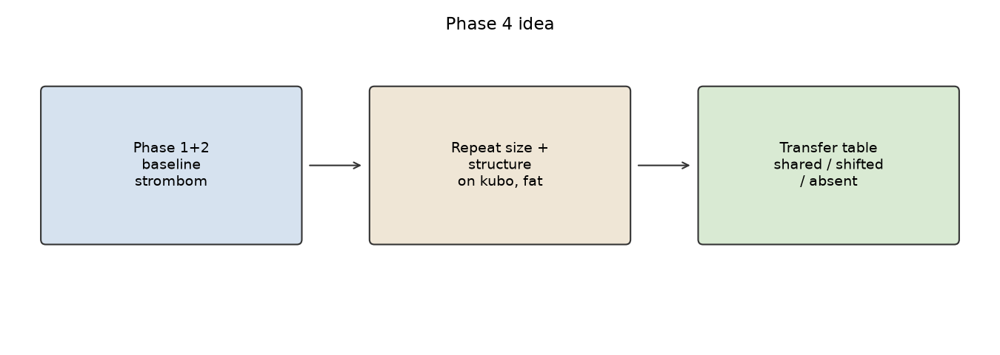
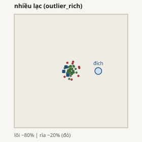

Package home · Vietnamese report · Phase 2 EN
Phase 4: method transfer (results)
Generality check (RQ4, Package D) for HerdSim protocol scaling_v2. Experiments are not started. Result slots below stay empty on purpose; fill them after claim-grade runs. Date prepared: 2026-09-25.
CONTEXT Phase 1-2 done; Phase 3 paused
Phase 1 (size, compact Strombom) and Phase 2 (structure, four layouts) are complete. Phase 3 (mechanism) needs overcrowding cells; neither Phase 1 nor Phase 2 found overcrowding on the baseline, so that contrast is undefined for now. Phase 4 does not need overcrowding: it repeats the size and structure maps under other dog methods and builds a transfer table.

PLAN At a glance
| Field | Value |
|---|---|
| Question | Which parts of the size/structure pattern transfer across herding methods? |
| Required methods | strombom_multi (already run), kubo, fat |
| Recommended (outside minimum) | communication_free |
| Size axis | Same freeze as Phase 1: compact, N grid 10 sizes, D grid 10 values, 30/100 seeds |
| Structure axis | Same as Phase 2: N in {50,100,200}, 4 layouts, full D, 30/100 seeds |
| Arena / theta / T0 | Unchanged Section 8 freeze |
| Package | D (transfer table); size also feeds A/F; structure feeds B |
| Claim to fill | C4 (shared D_min or overcrowding across the three required methods) |
QUESTION What Phase 4 asks
After the baseline maps, do we see the same story under a different controller, or only a Strombom story?
- D_min: same grid D (shared), different grid D (shifted), or missing on one side (absent).
- Overcrowding: present on both within 1.5x in D/N (shared), wider gap (shifted), or not on both (absent).
- I_dir / coverage saturation: same sign pattern, shifted magnitude, or not significant (see plan table).
- Structure row: filled only when each method has its structure contrast (C1a-style gap, or flat like Phase 2).
Finding strong method dependence is still useful: it bounds how far we can talk about "scaling" apart from the controller.
DESIGN What we freeze
| Choice | Value | Why |
|---|---|---|
| Same grids as Phase 1 / 2 | extends those YAMLs | Fair transfer: only the method changes. |
| Methods to run now | kubo, then fat | Required transfer set beside the finished baseline. |
| Per method order | size scout -> size claim -> structure scout -> structure claim | Size frontier first; structure uses the same N band as Phase 2. |
| Seeds | 30 scout / 100 claim windows | Same claim-grade rule as Phase 1-2. |
| Metrics | full registry + timeseries | perimeter, hull, i_dir, coverage available for Package D rows. |
YAMLs: phase4_{kubo,fat}_size_scout|claim.yaml and phase4_{kubo,fat}_structure_scout|claim.yaml under scaling/configs/protocols/.
DESIGN Baseline already known (do not re-run)
These numbers are the Strombom side of the transfer table. Phase 4 fills kubo and fat columns.
Size map (Phase 1, compact)
| Property | strombom_multi (done) | kubo | fat |
|---|---|---|---|
| D_min (N=5,10) | 2 | - | - |
| D_min (N>=25) | 1 | - | - |
| Overcrowding | none in D<=35 | - | - |
Structure map (Phase 2, N in {50,100,200})
| Property | strombom_multi (done) | kubo | fat |
|---|---|---|---|
| D_min all four layouts | 1 | - | - |
| C1a gap | not supported | - | - |
| Effort / perimeter by layout | wide >> compact; split ~ compact | - | - |



PLAN Claim C4 rules
| Claim | Supported when | Status now |
|---|---|---|
| C4 | D_min or overcrowding is shared across the three required methods. Structure row needs structure runs on each method. | UNEVALUATED (kubo/fat not run) |
| Property | shared | shifted | absent |
|---|---|---|---|
| D_min | equal grid D | different grid D | one side has no D_min |
| Overcrowding | both, D/N within 1.5x | both, wider gap | not on both |
| I_dir | r(I_dir, success) < -0.3 on both | sign pattern differs in magnitude | not significant |
| Coverage saturation | rule holds on both | holds on one | holds on neither |
RUN Trial counts (planning)
Phase 1 size scout was ~73 min; Phase 2 structure scout ~3.2 h on this machine (16 workers). Wide / large N cells are slow. Expect Phase 4 to take multiple sessions. Keep CPU governor on performance. Do not promise a single wall-clock number before the first scout.
RUN Commands (listed; this report does not run them)
From the repo root. Set TRANSFER_METHOD=kubo or fat.
0. CPU governor (once after boot)
for g in /sys/devices/system/cpu/cpu*/cpufreq/scaling_governor; do echo performance | sudo tee "$g" >/dev/null; done cat /sys/devices/system/cpu/cpu0/cpufreq/scaling_governor
1. Size map (per method)
make -C scaling scaling-transfer-size-scout TRANSFER_METHOD=kubo WORKERS=16 make -C scaling scaling-transfer-size-claim-plan TRANSFER_METHOD=kubo make -C scaling scaling-transfer-size-claim-reseed TRANSFER_METHOD=kubo WORKERS=16
Repeat with TRANSFER_METHOD=fat. Outputs under scaling/results/phase4/{kubo,fat}_size/.
2. Structure map (per method)
make -C scaling scaling-transfer-structure-scout TRANSFER_METHOD=kubo WORKERS=16 make -C scaling scaling-transfer-structure-claim-plan TRANSFER_METHOD=kubo make -C scaling scaling-transfer-structure-claim-reseed TRANSFER_METHOD=kubo WORKERS=16
Repeat for fat. Outputs under scaling/results/phase4/{kubo,fat}_structure/.
3. Package D (after maps exist)
make -C scaling scaling-analyse PROTOCOL=phase4_kubo_size_claim PACKAGE=D # or analyse on the merged paths once the transfer script inputs are ready
Recommended order: finish both size claims, then both structure claims, then fill C4 / Package D.
RESULTS Results (claim-grade)
Wall-clock (recorded)
| Step | Trials | Wall time |
|---|---|---|
| kubo size scout / claim | 3000 / 2100 | ~5.5 h / ~4.5 h |
| kubo structure scout / claim | 3600 / 2800 | ~16.7 h / ~16.6 h |
| fat size scout / claim (full map) | 3000 / 2000 | ~39.1 h / ~14.4 h |
| fat structure scout / claim | 3600 / 2400 | ~34.0 h / ~23.6 h |
Fat size: after a resume that truncated trials.csv, a clean re-scout (3000) and re-planned claim (20 boundary cells; resume kept the prior 200 N=400 trials) finished at 2000/2000. Package D size was rebuilt for all three methods.
Size-map D_min (compact, theta=0.90)
| N | strombom | kubo | fat | kubo label | fat label |
|---|---|---|---|---|---|
| 5 | 2 | 3 | 1 | shifted | shifted |
| 10 | 2 | 1 | 1 | shifted | shifted |
| 25 | 1 | 1 | hard failure | shared | absent |
| 50 | 1 | 1 | hard failure | shared | absent |
| 75 | 1 | 1 | hard failure | shared | absent |
| 100 | 1 | 1 | hard failure | shared | absent |
| 150 | 1 | 1 | hard failure | shared | absent |
| 200 | 1 | 1 | hard failure | shared | absent |
| 300 | 1 | 1 | hard failure | shared | absent |
| 400 | 1 | 1 | hard failure | shared | absent |
No overcrowding on compact size maps at theta 0.90. Fat N>=25: R < 0.90 for every grid D (claim tops at D=25,35).
Structure D_min (theta=0.90)
| N | Layout | strombom | kubo | fat |
|---|---|---|---|---|
| 50 | compact / split / outlier_rich | 1 / 1 / 1 | 1 / 1 / 1 | HF / HF / HF |
| 50 | wide | 1 | hard failure | hard failure |
| 100 | compact / split / outlier_rich | 1 / 1 / 1 | 1 / 1 / 1 | HF / HF / HF |
| 100 | wide | 1 | hard failure | hard failure |
| 200 | compact / split | 1 / 1 | 1 / 1 | HF / HF |
| 200 | outlier_rich | 1 | 4 (overcrowd from D=10) | hard failure |
| 200 | wide | 1 | hard failure | hard failure |
Kubo: C1a-style gap yes (wide never reaches R>=0.90; outlier_rich at N=200 needs 4 dogs and shows overcrowding). Fat: no D_min on any cell of {50,100,200} x 4 layouts (typical R < 0.5; wide/outlier_rich ~0).
Transfer labels (Package D)
| Property | kubo vs strombom | fat vs strombom |
|---|---|---|
| D_min (size, N>=25) | shared | absent (hard failure) |
| D_min (size, N=5,10) | shifted | shifted (fat D_min=1) |
| Overcrowding (size) | absent (neither) | absent |
| I_dir signature | absent | shifted (stronger negative r on fat) |
| Coverage saturation | shifted | shifted |
| Structure (state-dependent D_min) | shifted (wide HF; outlier_rich N=200) | absent (fat HF everywhere) |
Artefacts: scaling/results/phase4/package_d/{size,structure}/. Package D size: 44 rows (8 shared, 7 shifted, 29 absent).
C4
Verdict: REJECTED.
Rule: D_min or overcrowding is shared across the three required methods, including the structure row. Observation: fat has no D_min for N>=25 on the size map and none on the structure map; overcrowding appears clearly only for kubo (outlier_rich, N=200), not across all three. Kubo and strombom share size-map D_min on most N, but C4 requires the full required set.
Regimes (kubo size, compact)
| Regime | Cells |
|---|---|
| Under-resourced | 2 |
| Efficient | 11 |
| Wasteful overspend | 87 |
| Overcrowding / hard failure | 0 / 0 |
Regimes (fat size, compact)
| Regime | Cells |
|---|---|
| Efficient | 3 |
| Wasteful overspend | 17 |
| Hard failure | 80 |
| Overcrowding | 0 |
DONE Phase 4 sims + report
LIMITS
- Still one task (drive-to-goal) and one arena freeze.
- communication_free is recommended, not required for the minimum C4 set.
- Do not cite smoke or scout alone for C4; fill claims only at claim grade.
- Phase 3 stays paused until some method shows overcrowding cells.
Docs: scaling/docs/main_scaling_plan.md (RQ4 / C4), scaling/configs/protocols/README.md.